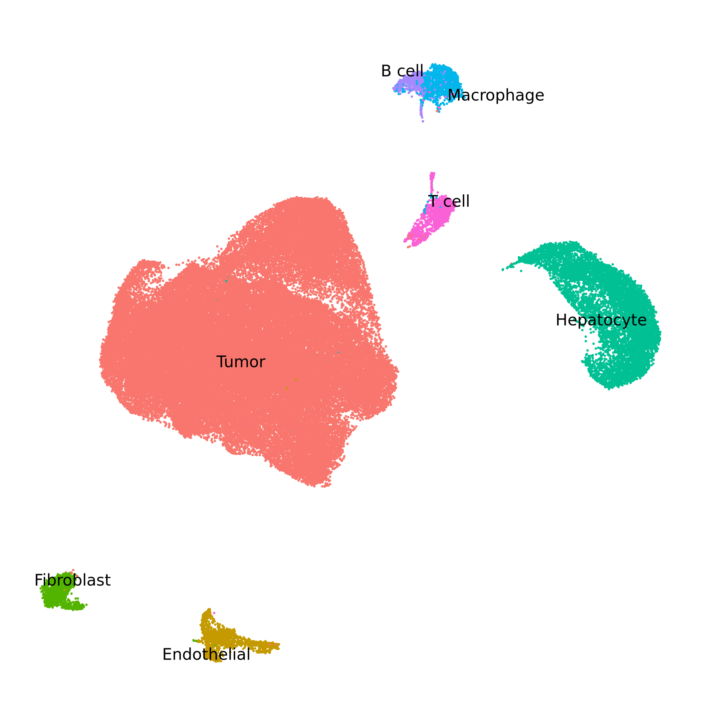
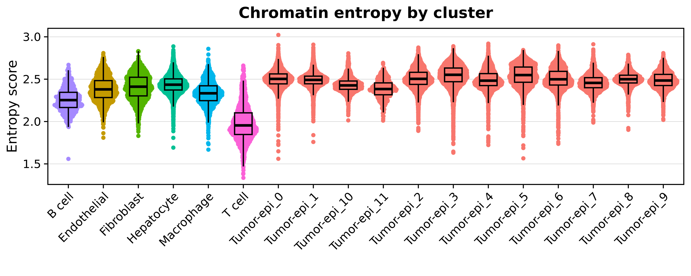
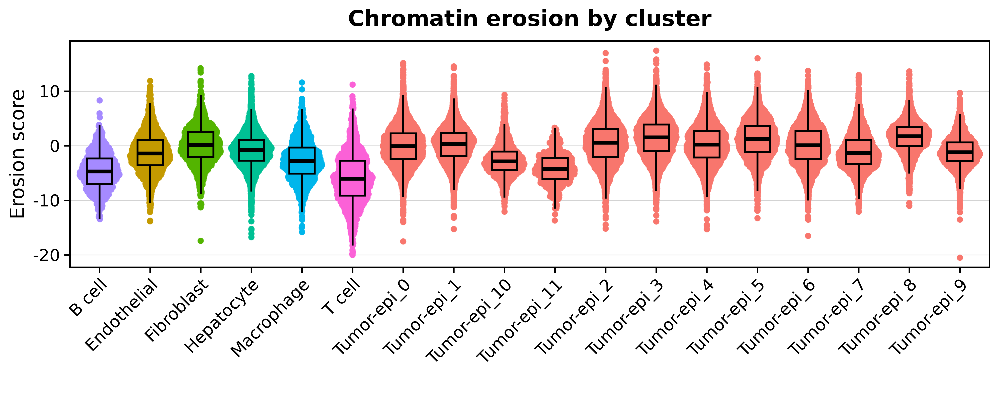
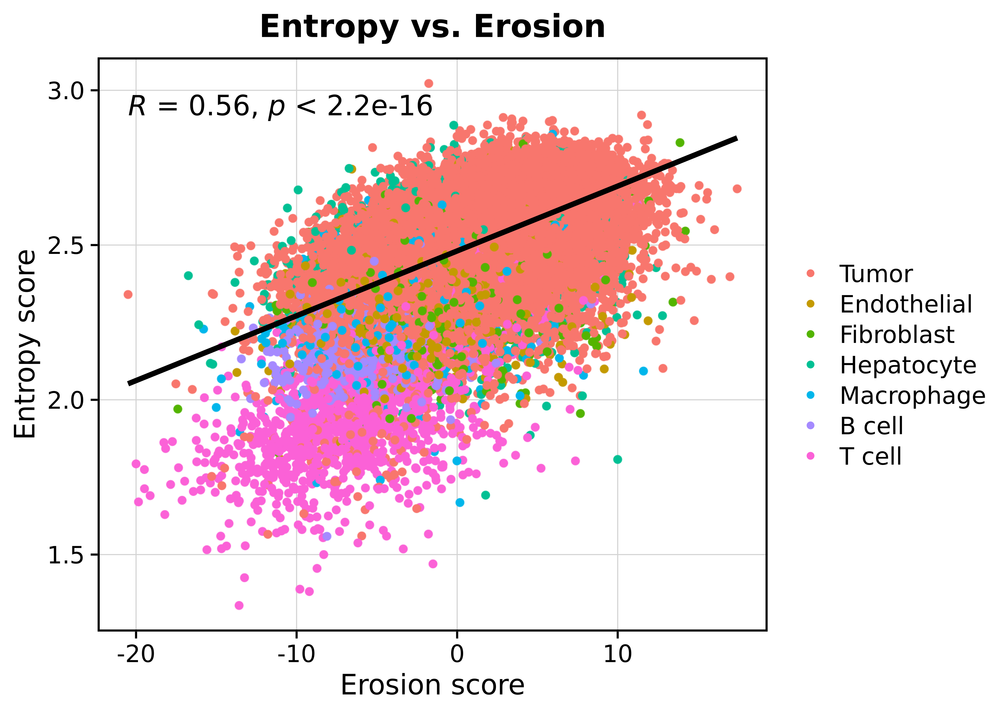
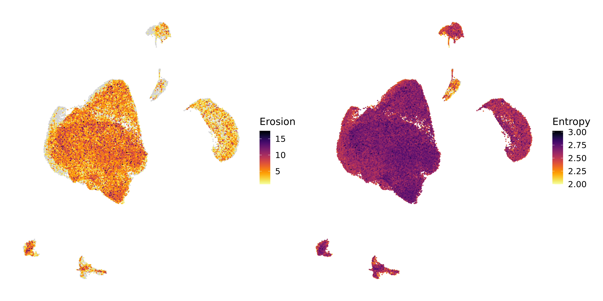

Compiled: 27-09-2025
Source: vignettes/scATAC.Rmd
Introduction
This tutorial demonstrates the key functionality of
chromatic to calculate cell-level chromatin
entropy and chromatin erosion scores in a scATAC-seq
dataset. For this tutorial, we demonstrate the package on a dataset of
colorectal cancer tumors profiled with 10X Genomics Multiome (ATAC +
RNA), although only the ATAC assay is needed for the analysis. At this
time the dataset is not currently available to the public, but in the
future we will update this tutorial to use a publicly available dataset.
To follow along with this tutorial, please use your own dataset. First
let’s define these scores.
Entropy score: Measures the diversity of chromatin states within a cell, with higher values indicating greater epigenomic heterogeneity or plasticity.
Erosion score: Quantifies the degree to which a cell’s chromatin state profile shifts toward repressive versus active states, based on signed and normalized chromatin state abundances. Positive scores indicate an enrichment of repressive states while negative values indicate enrichment of active states.
Load the dataset and required libraries
First we load the processed dataset and the required R libraries for this tutorial.
# single-cell analysis packages
library(Seurat)
library(Signac)
# data / plotting packages
library(tidyverse)
library(cowplot)
library(patchwork)
theme_set(theme_cowplot())
# additional Genomics packages
library(EnsDb.Hsapiens.v86)
library(BSgenome.Hsapiens.UCSC.hg38)
library(GenomicRanges)
library(rtracklayer)
# load the processed Seurat object
seurat_obj <- readRDS("CRC_Tumor_multiome.rds")To get acquainted with this dataset, let’s check the UMAP colored by clusters.

See code
Run chromatic
Set up chromatin states
In order to run chromatic, we require a GenomicRanges
object containing information about which genomic regions correspond to
which chromatin state. We recommend using chromatin states generated via
ChromHMM.
Importantly, chromatin states exhibit considerable biological variation across cell lineages, tissues, and species. Therefore it is important to choose an appropriate reference for our dataset. In this tutorial, we are using a colorectal cancer dataset, so we require a chromatin state reference for the colon.
The ROADMAP
epigenomics project hosts chromatin states that have been computed
in many different human tissues, including the colon. We use the
function FetchChromatinStates to download the relevant
ChromHMM chromatin states, and load it into R as a
GenomicRanges object.
chromHMM_states <- FetchChromatinStates(
tissue = "Colon", # input the tissue ID, mnemonic, or name
model = 15, # select the 15 state, 18 state, or 25 state model
genome = 'hg38' # select hg19 or hg38
)Additional information
When we run this function, first we see the following message:
Multiple tissues matched your input:
EID Mnemonic Name
1 E076 GI.CLN.SM.MUS Colon Smooth Muscle
2 E106 GI.CLN.SIG Sigmoid Colon
3 E075 GI.CLN.MUC Colonic Mucosa
Enter the row number of the tissue you want: 2
Downloading ChromHMM segmentation from: https://egg2.wustl.edu/roadmap/data/byFileType/chromhmmSegmentations/ChmmModels/coreMarks/jointModel/final/E106_15_coreMarks_hg38lift_mnemonics.bed.gz
trying URL 'https://egg2.wustl.edu/roadmap/data/byFileType/chromhmmSegmentations/ChmmModels/coreMarks/jointModel/final/E106_15_coreMarks_hg38lift_mnemonics.bed.gz'
Content type 'application/x-gzip' length 2302510 bytes (2.2 MB)
==================================================
downloaded 2.2 MB
Loaded 393420 regions for E106 (GI.CLN.SIG, Sigmoid Colon) — 15-state model, genome hg38The function tries to match the tissue argument to the
list of tissues profiled in the ROADMAP project. The table containing
this information is included in chromatic in an object
called tissue_map.
head(tissue_map)head(tissue_map)
EID GROUP Mnemonic Name
1 E017 IMR90 LNG.IMR90 IMR90 fetal lung fibroblasts Cell Line
2 E002 ESC ESC.WA7 ES-WA7 Cells
3 E008 ESC ESC.H9 H9 Cells
4 E001 ESC ESC.I3 ES-I3 Cells
5 E015 ESC ESC.HUES6 HUES6 Cells
6 E014 ESC ESC.HUES48 HUES48 CellsFor convenience, FetchChromatinStates accepts partial
matches, and prompts the user to select the best match for their tissue.
Partial matching can be turned off by setting
fuzzy_matching=FALSE.
Let’s inspect the output of this function.
head(chromHMM_states)GRanges object with 6 ranges and 1 metadata column:
seqnames ranges strand | name
<Rle> <IRanges> <Rle> | <character>
[1] chr1 10001-14600 * | 15_Quies
[2] chr1 14601-19000 * | 5_TxWk
[3] chr1 19001-96080 * | 15_Quies
[4] chr1 96277-96476 * | 15_Quies
[5] chr1 97277-177200 * | 15_Quies
[6] chr1 257850-297849 * | 15_Quies
-------
seqinfo: 25 sequences from an unspecified genome; no seqlengthsIf you are using an external resource aside from ROADMAP, for example
if you are using a non-human species or a tissue not profiled by
ROADMAP, you must format your data as a GenomicRanges
object similar to what is shown above.
RunChromatic
The main function of chromatic is
RunChromatic, which will calculate a chromatin erosion
score an a chromatin entropy score for each cell in the
seurat_obj. These scores are based on matching regions in a
ChromatinAssay
in our seurat_obj with the regions from our chromatin
states from the previous step.
output <- RunChromatic(
seurat_obj,
chromHMM_states,
stoplist = blacklist_hg38_unified,
assay = 'Peaks',
)
# add the scores to the seurat_obj@meta.data slot
seurat_obj$entropy_score <- output$entropy$entropy
seurat_obj$erosion_score <- output$erosion$erosionSee function messages
[1] "Filtering by stoplist regions"
[1] "Filtering nonstandard chromosomes"
[1] "Annotating peaks by overlapping with chromatin states"
[1] "Excluding uncommon peaks"
Filtered peaks: retained 158958 of 175508 peaks (90.6%).
[1] "State matrix"
The following states were not classified (sign=0): 10_TssBiv, 8_ZNF/Rpts, 7_Enh, 12_EnhBiv, 11_BivFlnk
[1] "Calculating erosion score "
[1] "Calculating entropy score "The output object is a list containing sevral different
results:
-
peaks_gr, a subset of theGenomicRangesobject from theChromatinAssayof your Seurat object, with the overlapping chromatin state annotation. -
state_matrix, the cells by chromatin states counts matrix used for the entropy and erosion score calculations. -
entropy, a dataframe containing the entropy score results. -
erosion, a dataframe containing the erosion score results.
For now we just focus on the entropy and erosion scores.
Downstream plotting
Currently, chromatic does not include plotting
functions, and instead we recommend visualizing the results directly
using ggplot2.
First, let’s visualize the distribution of these scores across our clusters.

See plotting code
p <- seurat_obj@meta.data %>%
ggplot(aes(x = lv2, y = entropy_score, color = anno))
# plot the points on the bottom:
p <- p +
ggrastr::rasterise(ggbeeswarm::geom_quasirandom(
method = "pseudorandom",
size = 1
), dpi=300)
# add the box
p <- p +
geom_boxplot(
color = 'black',
outlier.shape=NA,
alpha = 0.3,
width = 0.5,
fill = NA
)
# set up the theme:
p <- p +
theme(
axis.line.x = element_blank(),
axis.line.y = element_blank(),
panel.border = element_rect(linewidth=1,color='black', fill=NA),
panel.grid.major.y = element_line(linewidth=0.25, color='lightgrey'),
plot.title = element_text(hjust=0.5),
strip.background = element_blank(),
strip.text = element_text(face='bold')
) + Seurat::NoLegend() + Seurat::RotatedAxis() +
xlab('') + ylab("Entropy score") + ggtitle("Chromatin entropy by cluster")
p
See plotting code
p <- seurat_obj@meta.data %>%
ggplot(aes(x = lv2, y = erosion_score, color = anno))
# plot the points on the bottom:
p <- p +
ggrastr::rasterise(ggbeeswarm::geom_quasirandom(
method = "pseudorandom",
size = 1
), dpi=300)
# add the box
p <- p +
geom_boxplot(
color = 'black',
outlier.shape=NA,
alpha = 0.3,
width = 0.5,
fill = NA
)
# set up the theme:
p <- p +
theme(
axis.line.x = element_blank(),
axis.line.y = element_blank(),
panel.border = element_rect(linewidth=1,color='black', fill=NA),
panel.grid.major.y = element_line(linewidth=0.25, color='lightgrey'),
plot.title = element_text(hjust=0.5),
strip.background = element_blank(),
strip.text = element_text(face='bold')
) + Seurat::NoLegend() + Seurat::RotatedAxis() +
xlab('') + ylab("Erosion score") + ggtitle("Chromatin erosion by cluster")
pWe can also directly compare the entropy and the erosion scores on a scatter plot.

See plotting code
p <- seurat_obj@meta.data %>%
ggplot(aes(x = erosion_score, y = entropy_score)) +
ggrastr::rasterise(geom_point(aes(color=anno), size=1), dpi=300) +
ggpubr::stat_cor() +
geom_smooth(method = 'lm', color='black') +
theme(
axis.line.x = element_blank(),
axis.line.y = element_blank(),
panel.border = element_rect(linewidth=1,color='black', fill=NA),
panel.grid.major = element_line(linewidth=0.25, color='lightgrey'),
plot.title = element_text(hjust=0.5),
strip.background = element_blank(),
strip.text = element_text(face='bold')
) +
xlab("Erosion score") +
ylab("Entropy score") +
labs(color = "") + ggtitle("Entropy vs. Erosion")
pWe can also visualize the scores directly on the UMAP, although this is arguably more difficult than just looking at the distributions due to cells plotting on top of one another as you can see in the Entropy plot below.

See plotting code
WARNING: The function below is a custom helper function that
I have not included in this package so you sadly will not be able to run
this. I recommend using Seurat FeaturePlot instead.
p1 <- FeatureEmbedding(
seurat_obj,
features = c('erosion_score') ,
raster=TRUE, dpi=300,
reduction = 'umap',
ncol = 2,
plot_max = 'q100',
plot_min = 1
) + labs(color="Erosion")
p2 <- FeatureEmbedding(
seurat_obj,
features = c('entropy_score') ,
raster=TRUE, dpi=300,
reduction = 'umap',
ncol = 2,
plot_max = 'q100',
plot_min = 2
) + labs(color="Entropy")
(p1 | p2) Overall, these plots show us that the cells in our dataset display a range of entropy and erosion values, and that the cells belonging to malignant clusters usually higher entropy and erosion compared to non-malignant cells. We also note that there is a strong correlation between entropy and erosion, but ultimately they are two different yet complementary measurements of cell-level chromatin heterogeneity.